보이기 전에, 먼저 정리합니다.
01 STRUCTURE
콘텐츠의 목적과 중요도를 구분하고
사용자가 어떤 정보를 먼저 봐야 하는지 생각합니다.
정보 구조가 정리된 이후
레이아웃과 시각적인 표현을 결정합니다.
좋은 화면은 작은 기준에서 시작됩니다.
01 STRUCTURE
콘텐츠의 목적과 중요도를 구분하고
사용자가 어떤 정보를 먼저 봐야 하는지 생각합니다.
정보 구조가 정리된 이후
레이아웃과 시각적인 표현을 결정합니다.
02 BALANCE
글자의 크기와 굵기, 행간, 정렬, 이미지 비율, 여백처럼
눈에 크게 드러나지 않는 요소까지 조율합니다.
화려함보다는
전체 화면의 균형을 중요하게 생각합니다.
03 IDENTITY
모든 프로젝트에 같은 디자인을 적용하기보다는
브랜드가 가진 타깃과 이미지, 제품의 성격을 분석합니다.
필요하다면 기존 디자인을 다시 검토하고
브랜드의 방향과 맞지 않는 부분은 과감하게 수정합니다.
04 IMPLEMENTATION
디자인 단계부터 변화하는 UI, 콘텐츠 구조, 반응형 변화와
HTML·CSS 구현 방식을 함께 고려합니다.
디자인과 개발 사이의 간격을 줄이는 것이
제가 가진 강점 중 하나입니다.
05 USABILITY
사용자의 흐름을 먼저 생각합니다. 화면을 보는 순서와 클릭하는 과정이
자연스럽게 이어지는지 확인합니다.
디자인의 표현뿐 아니라 사용자가 불편함 없이 정보를 이해하고
이동할 수 있는지를 함께 고려합니다.
06 DETAIL
마지막까지 세부 요소를 확인합니다. 간격, 정렬, 이미지 크기, 버튼 위치
처럼작은 요소까지 반복해서 점검합니다.
완성된 화면도 다시 확인하며 어색한 부분을 수정하고 전체적인
완성도를 높입니다.
아이디어를 실제 화면으로 완성할 수 있습니다.
Vector Graphic 제작
웹 콘텐츠 편집&이미지 디자인
웹 UI 설계 및 프로토타입 제작
콘텐츠 의미를 고려한 구조 작성
디자인을 실제 웹 화면으로 구현
기본적 웹 인터랙션 구현
버전 관리 및 협업
Git 작업 관리
프로젝트 및 문서 관리
짧은 순간에도 핵심 메시지가 명확하게 전달되도록 구성했습니다.
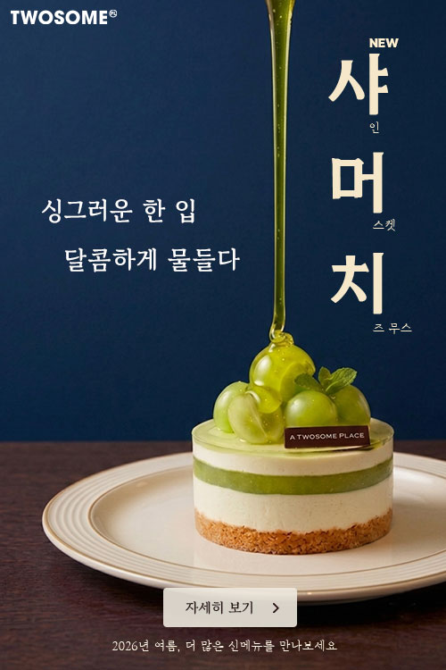
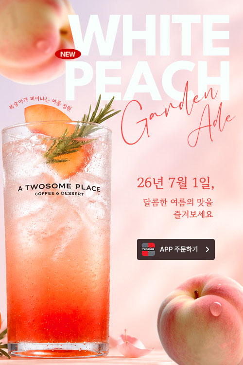
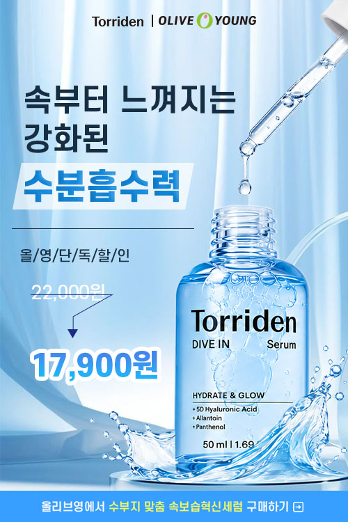
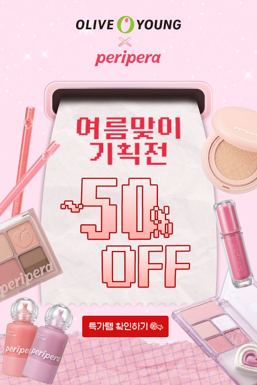
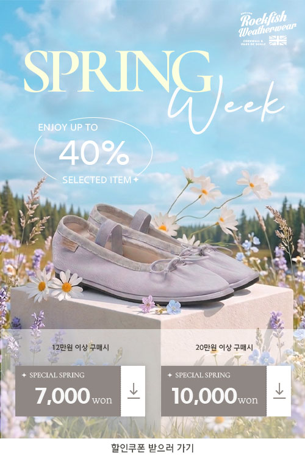
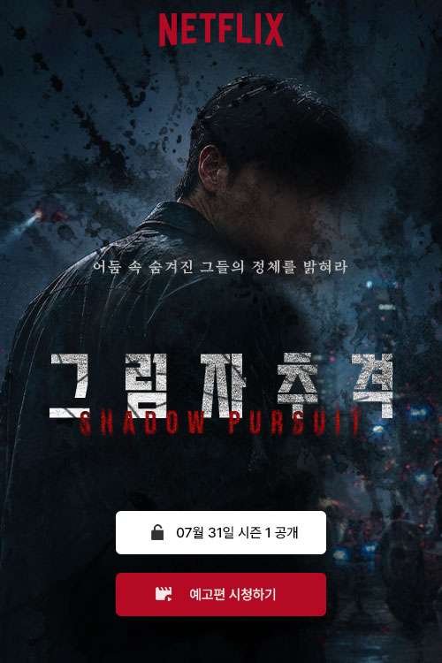
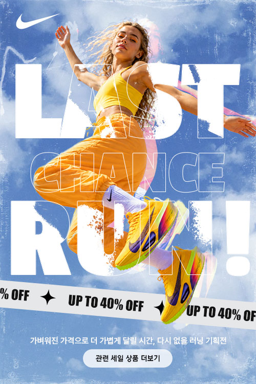
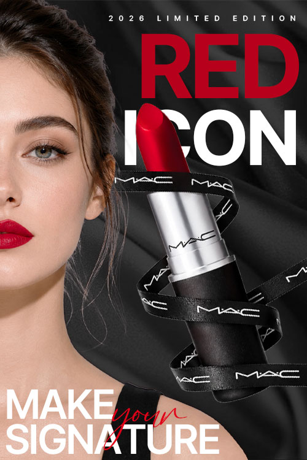
강렬한 레드와 블랙 컬러 대비를 활용해
브랜드 특유의 시크하고 감각적인 무드를
강조했습니다.
인물과 립 제품을 과감하게 배치하고,
큰 타이포그래피로 시선을 집중시켜
한정판 제품의 임팩트를 표현했습니다.
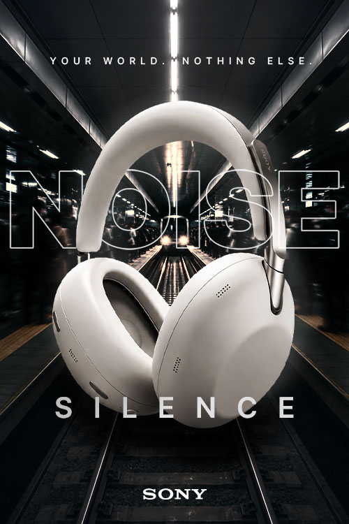
헤드폰을 화면 중앙에 크게 배치해
제품에 시선이 집중되도록 구성했습니다.
대칭적인 공간과 어두운 배경, 빛의 연출을
활용해 외부 소음과 분리된 듯한
몰입감을 표현하고 노이즈 캔슬링 기능을
시각적으로 강조했습니다.
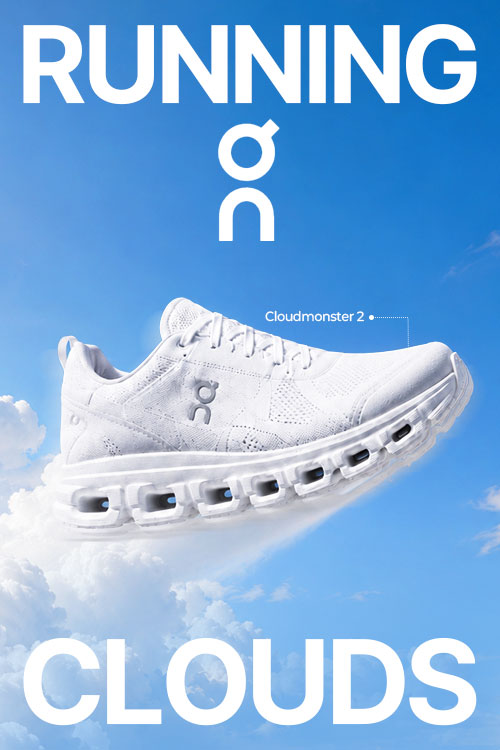
푸른 하늘과 구름을 배경으로
러닝화를 공중에 띄워 가볍고 부드러운
착화감을 표현했습니다.
밝은 블루와 화이트 컬러,
큼직한 타이포그래피를 활용해
경쾌하고 활동적인 브랜드 이미지를
강조했습니다.
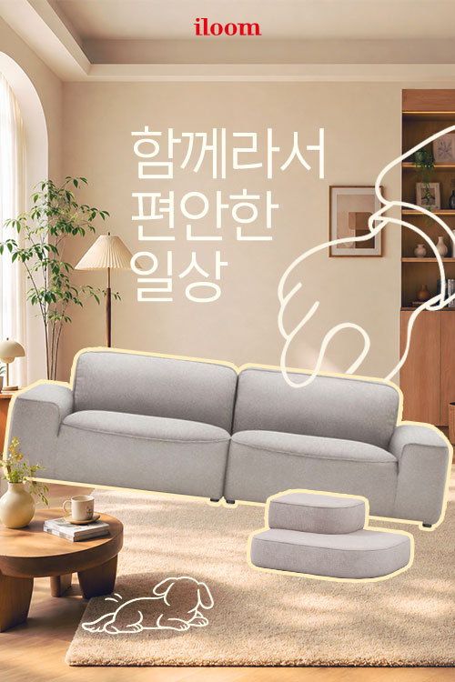
따뜻한 베이지 톤의 거실 공간을
중심으로 구성해 편안하고 안정적인
주거 분위기를 표현했습니다.
소파를 중심에 배치하고 손그림 드로잉
요소를 더해 일상 속 친근함과 브랜드의
따뜻한 이미지를 강조했습니다.
제품의 특징과 장점이 자연스러운 흐름으로 전달되도록 설계했습니다.
PORTFOLIO SECTION
PORTFOLIO SECTION
PROFILE SECTION
PROFILE SECTION